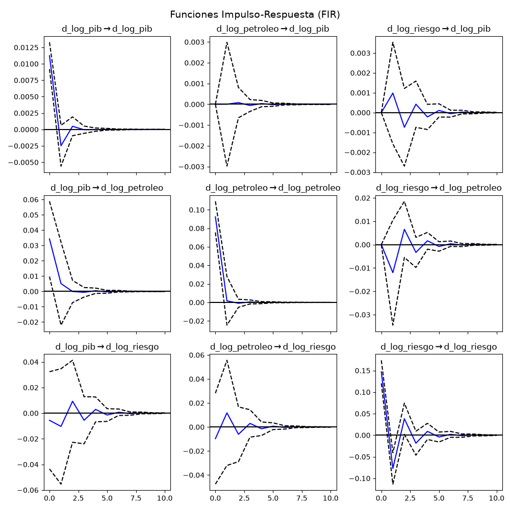

Análisis de Series de Tiempo Multivariadas para la Economía Ecuatoriana (2010 - 2024)
UNIVERSIDAD TÉCNICA DE COTOPAXI
Facultad de Ciencias Administrativas y Económicas
Autor: Richard Verdezoto
Asignatura: Econometría II
¿Cómo impactan los shocks en el precio del petróleo WTI y las fluctuaciones del riesgo país (EMBI) en el crecimiento del PIB de Ecuador?
Vector Autorregresivo (VAR) estimado con primeras diferencias logarítmicas para asegurar estacionariedad y evaluar la transmisión de perturbaciones mediante Impulso-Respuesta.
A continuación se presentan las respuestas dinámicas del PIB ante innovaciones no anticipadas en los precios del petróleo y el riesgo país:
